Chapter 6 Network analysis with R
library("igraph")
library("igraphdata")
library("network")
library("networkD3")6.1 Introduction
Network analysis is a huge topic and applied in many disciplines, ranging from mathematics to sociology. In R there are many packages available. We will use the igraph package, which seems to be the most encompassing.6 The next sections first starts with creating networks on our own (from scratch), then I show how to make structured networks and finally we create networks from data. Thereafter, I say something about creating interactive networks (those cool things, you sometimes see on internet). The last section deals with calculating network characteristics.
6.2 Creating networks
There are various ways to create a network: one can it oneself, one can create a structured network, and one can read a network from file or the internet. (The latter is typically done with very large and dynamics network data.)
6.2.1 Creating a network yourself
First of all, I will show how to create a network “by hand”. We first start with an undirected network. Suppose we have a network with four nodes (named 1,2, 3 and, you guessed it, 4). Then we can create a graph called g_4 by:
g_4 <- graph (edges = c(1,2,2,3,3,4, 4,1), n = 4, directed = FALSE)Let us have a look at g_4
g_4## IGRAPH 3ed597e U--- 4 4 --
## + edges from 3ed597e:
## [1] 1--2 2--3 3--4 1--4So, g_4 is an igraph sort of object which has four edges 1--2 2--3 3--4 1--4. Note that these coincide with c(1,2,2,3,3,4, 4,1), so an edge is always formed by two components (they do not have to be numbers). Now plotting g_4 leads to:
plot(g_4)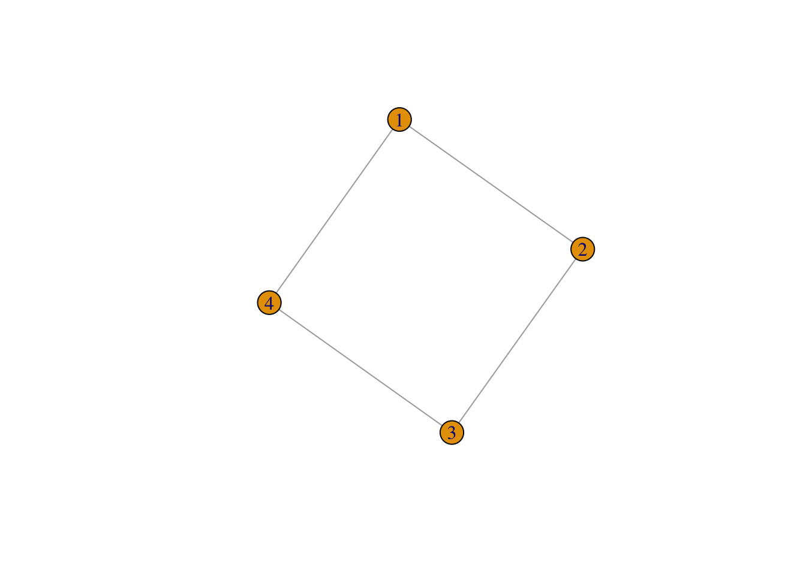
The connectivity matrix of the network can be directly given by:
g_4[]## 4 x 4 sparse Matrix of class "dgCMatrix"
##
## [1,] . 1 . 1
## [2,] 1 . 1 .
## [3,] . 1 . 1
## [4,] 1 . 1 .Now, for more directed graphs we need to set directed = TRUE.
g_4 <- graph (edges = c(1,2,2,3,3,4, 4,1), n = 4, directed = TRUE)with as plot
plot(g_4)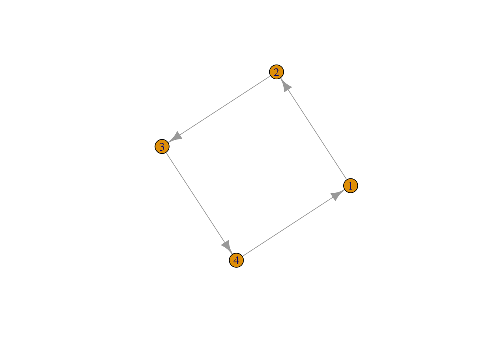
Graphs may also be generated by using -, -+ and +-+, in combination with the command graph_from_literal. For example:
g_directed <- graph_from_literal(A-+B, B +-+ C, C+-A)
plot(g_directed)
Finally, we can influence the color and sizes (amongst others) of all the elements of the network, so:
plot(g_directed, edge.arrow.size=2,vertex.size = 50, vertex.color = "blue" )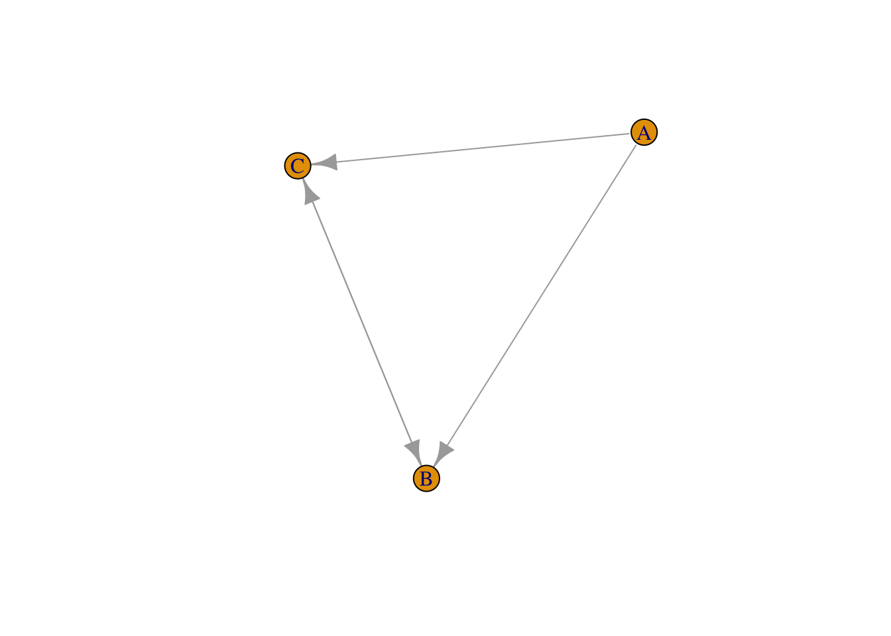
However, this way of creating of networks is not very efficient. We therefore offer some other ways as well, starting with created directly (well-structured networks).
6.2.2 Structured networks
With the package igraph it is rather straighforward to create structured networks. Let’s start with an empty network. We therefore use the command make_empty_graph(500) in order to create 500 nodes and no links.
g_empty <- make_empty_graph(500)
plot(g_empty, vertex.label= NA, edge.arrow.size=0.02,vertex.size = 0.5)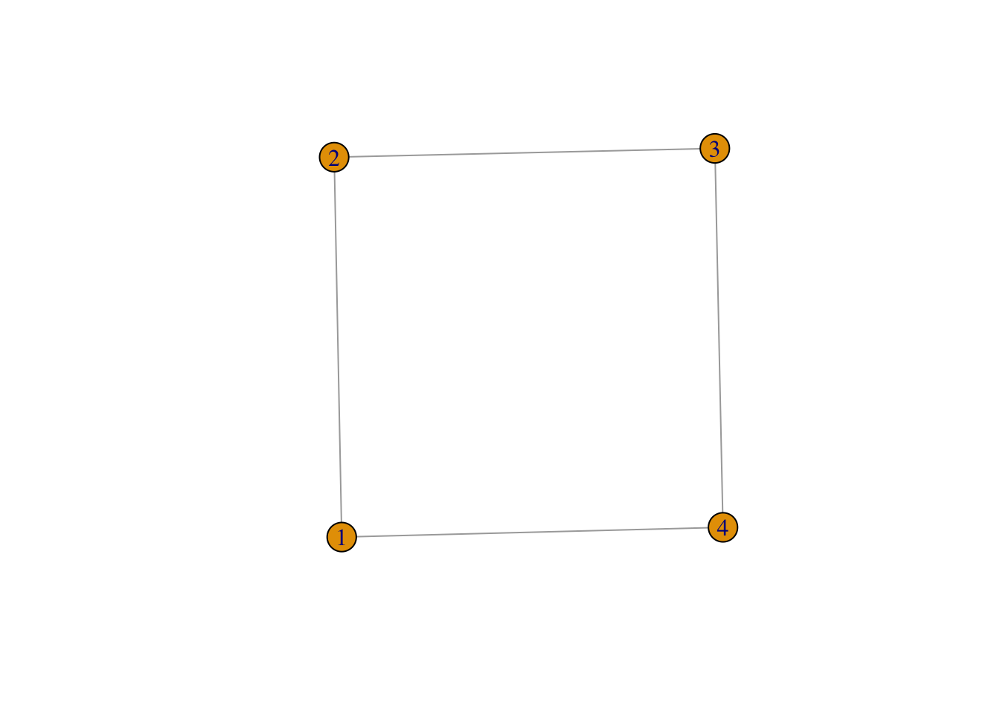
The other extreme is obviously the fully connected network. With the command make_full_graph(40) we can create a fully connected network between 40 nodes. (Please do not do 500 nodes; it takes a long time to create that network (with \(500 \times 500 - 500\) links)).
g_full <- make_full_graph(40)
plot(g_full, vertex.label= NA, edge.arrow.size=0.02,vertex.size = 0.5)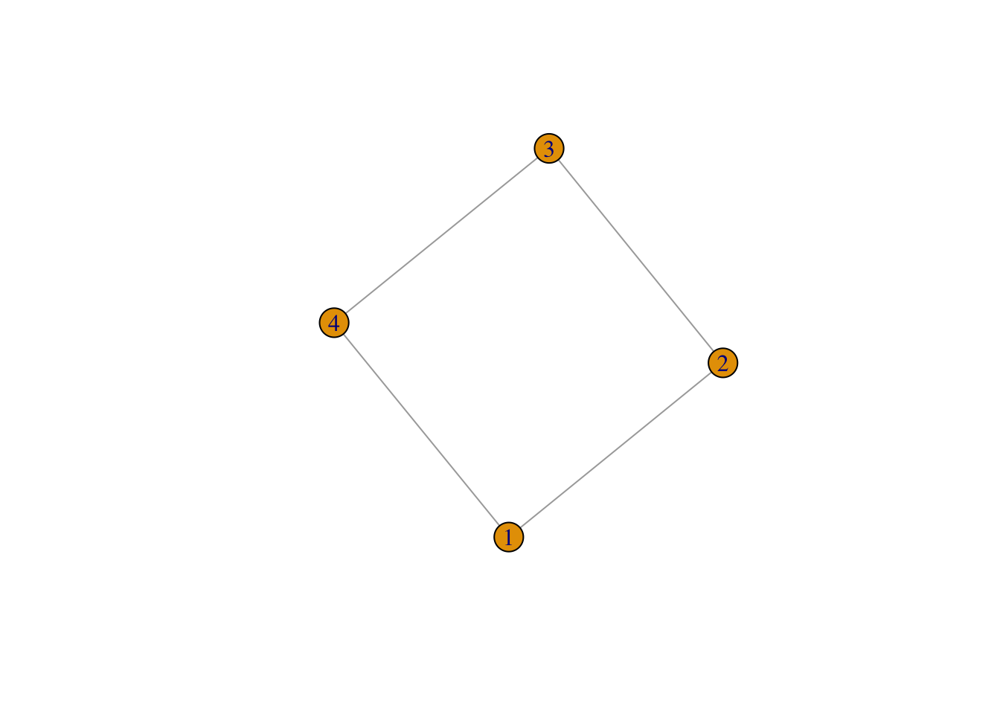
The make_star(500) command creates a star network (or a hub-and-spoke network) with 500 nodes.
g_star <- make_star(500)
plot(g_star, vertex.label= NA, edge.arrow.size=0.02,vertex.size = 0.5)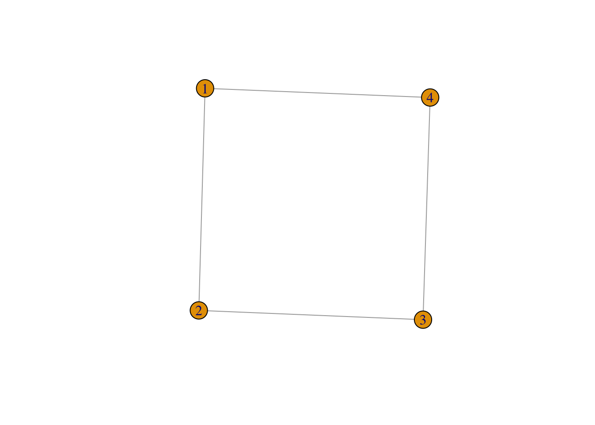
With the make_tree(500, children = 3, mode="undirected command, we create an undirected hierarchical tree with each time three children
g_tree <- make_tree(500, children = 3, mode = "undirected")
plot(g_tree, vertex.label= NA, edge.arrow.size=0.02,vertex.size = 0.5)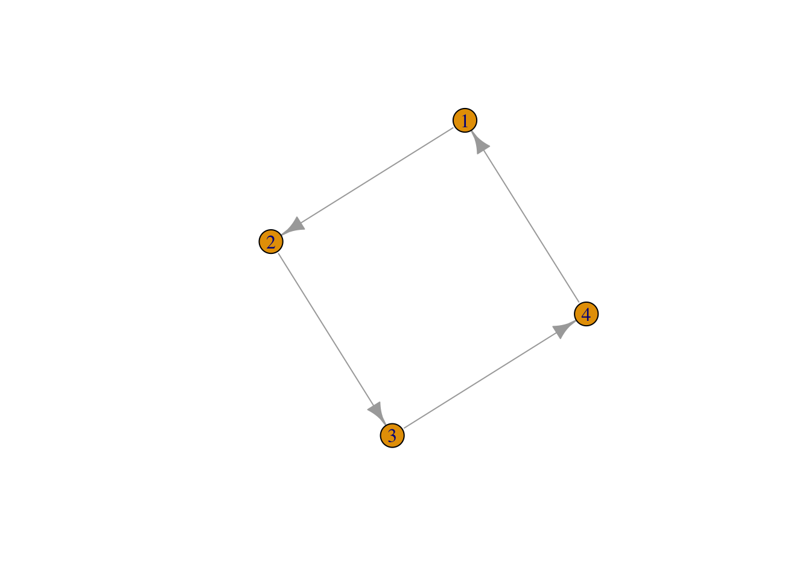
And the graph.ring(500) creates a ring (or line) structure where each node is connected to two other nodes in a sequential way
g_ring <- graph.ring(500)
plot(g_ring, vertex.label= NA, edge.arrow.size=0.02,vertex.size = 0.5)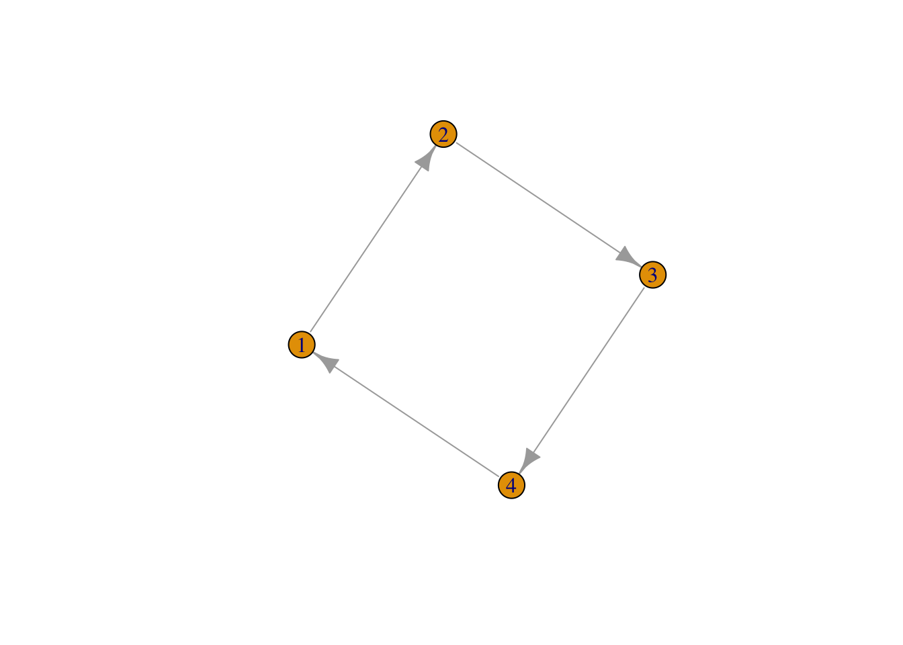
For real-world networks we can use the following commands. First, the command erdos.renyi.game(500, 0.005) creates a random network, where each node has a probability of 0.005 to be connected to each other node.
plot(erdos.renyi.game(500, 0.005), vertex.label= NA, edge.arrow.size=0.02,vertex.size = 0.5)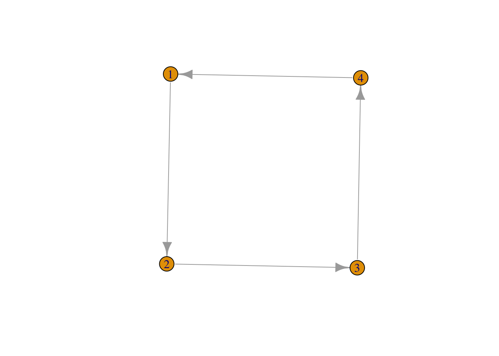
For small-world networks, we need to rewire the ring network. We can do by the command rewire as follows:
plot(rewire(g_ring,each_edge(prob = 0.5)), vertex.label= NA, edge.arrow.size=0.02,vertex.size = 0.5)Note that the probability of rewiring is now 0.5.
Finally, for a power-law we need to invoke an algorithm. In this case the it is called barabasi.game, where we now create a power-law type of network with the following underlying formula \(P(k) = k^{-0.5}\).
g_power_law <- barabasi.game(500, 0.5)
plot(g_power_law, vertex.label= NA, edge.arrow.size=0.02,vertex.size = 0.5)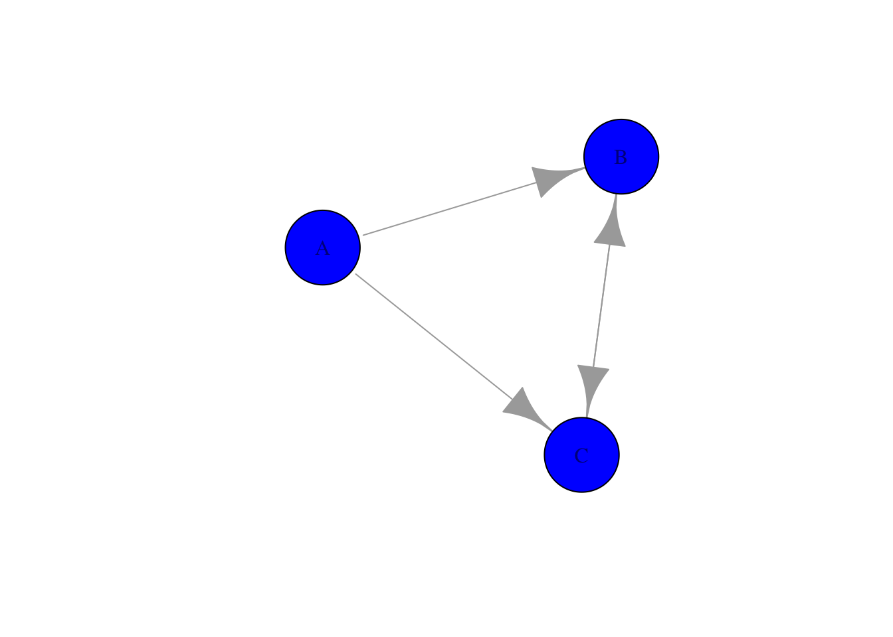
Note the tree-like structure.
6.2.3 Reading in networks
There are various sources for networks on the internet. One of them is the wonderful network package, which containts the famous florentine wedding network –>
library("network") # Read in the library
data(flo) # read built in data
florence <- network(flo, directed = FALSE) # connect data to objectwhich contains business and marriage ties (PADGB) in 14th century Florence and looks like this
plot(florence, displaylabels = TRUE) # plot the object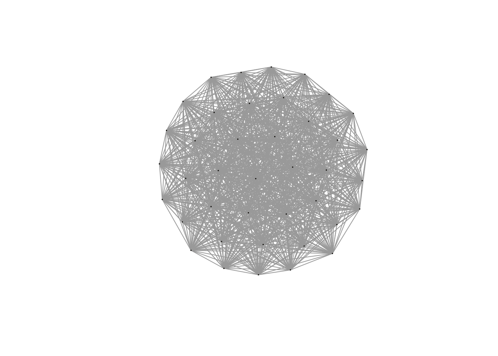
Another good but smaller source is the igraphdata package which actually contains a network of american domestic flights.
Another possibility is to read in the data from a .csv file. Something like (I took and modified the example from http://stackoverflow.com/questions/23687806/creating-a-network-graph-using-igraph-in-r):
# Make up data
relations <- data.frame(from=c("Bob", "Cecil", "Cecil", "David", "David", "Esmeralda"),
to=c("Alice", "Bob", "Alice", "Alice", "Bob", "Alice"))
# Alternatively, you could read in the data from a similar CSV file as follows:
# relations <- read.csv("relations.csv")
# Load (DIRECTED) graph from data frame
g_relations <- graph.data.frame(relations, directed=TRUE)
plot(g_relations)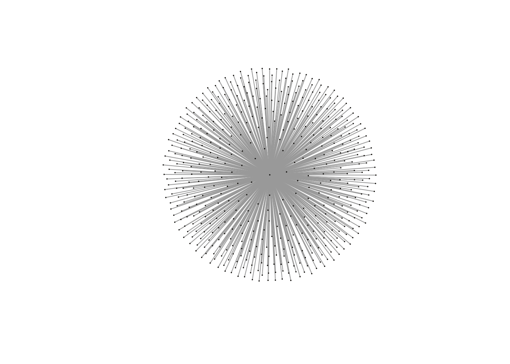
Note that this only requires a from and to columns in a .csv file, which resembles trade, commuting, migration and transport networks (in a gravity-model type of way). The only thing is that we need to convert this data in a igraph structure with graph.data.frame.
6.2.4 Sankey networks
# Read in the data in a dataframe called Data
Data <- read.csv("Migration_Corop_2003.csv", header=TRUE,stringsAsFactors=FALSE)
# We filter some of the data so that our sankey diagram will not be too large
Data <- filter(Data, To < 25)
Data <- filter(Data, From < 25)
# Create a variable for the names of the node (both on the left and right side)
DataNames <- rep(Data$NameFrom[1:8], times=2)
# Create a dataframe of this variable names
Names <- data.frame(DataNames, stringsAsFactors=FALSE)
# Revalue To and From such that they nicely count up to the number of nodes (Note, we start at index number 0!)
Data$To <- rep(8:15, each=8)
Data$From <- rep(0:7, times=8)
# Now plot network
sankeyNetwork(Links = Data, # which dataframe to be used for the flows
Nodes = Names, # which dataframe to be used for the names of the nodes
Source = "From", # where do the flows come from (index number)
Target = "To", # where do the flows go to (index number)
Value = "Migrants", # the variable that denote the flows from dataframe
units = "Migrants", # Which units are the flows (not necessary)
NodeID = "DataNames", # Variable that gives the names from the dataframe Names
fontSize = 14, # Make things look better
nodeWidth = 40) # make things look good6.3 Network characteristics
So, it is fine that you have a network, but what about the network characteristics. Well these are easily given once you have a network.
For density, or the completeness of the network, one can look at
i_florence <- graph_from_adjacency_matrix(flo, mode = "undirected")
edge_density(i_florence)## [1] 0.1666667Which give the proportion of the present edges from all possible edges in the network.
The diameter of a network can be retrieved as:
diameter(i_florence)## [1] 5somewhat more interesting is given by the degree function which gives the number of connections. For our power-law network this amounts to
deg <- degree(g_power_law)
deg## [1] 14 16 9 12 8 8 9 3 3 6 10 1 1 1 7 4 6 4 7 6 2 4 3
## [24] 11 6 10 4 1 7 8 1 3 6 3 4 3 1 7 8 4 4 4 2 1 4 5
## [47] 2 2 4 3 8 1 1 1 1 6 1 4 4 2 3 6 6 2 1 2 3 1 2
## [70] 1 6 7 3 1 1 4 1 3 5 1 2 7 1 1 1 2 2 2 3 2 2 2
## [93] 3 2 2 1 2 5 3 7 1 1 1 1 1 3 3 1 1 1 1 1 1 6 2
## [116] 6 3 2 1 4 4 1 2 2 2 1 1 1 1 2 3 2 4 4 1 2 6 1
## [139] 2 3 1 1 1 3 1 1 2 3 3 3 1 4 1 2 1 1 1 1 1 1 2
## [162] 2 2 1 1 1 1 3 2 2 3 1 4 2 1 2 3 1 1 1 1 1 3 3
## [185] 2 3 4 3 2 1 1 3 2 1 3 2 5 2 3 1 3 2 1 1 1 1 5
## [208] 4 1 1 1 4 1 2 1 1 1 1 2 3 1 3 3 2 2 2 1 5 1 1
## [231] 2 3 1 1 1 1 2 3 1 2 3 1 2 1 1 1 1 1 1 3 1 1 3
## [254] 3 2 1 3 1 1 4 2 1 3 2 2 1 1 1 1 1 1 2 1 1 1 1
## [277] 1 2 1 1 1 1 2 1 1 2 2 1 1 1 1 1 1 1 1 1 1 1 3
## [300] 1 1 1 5 1 1 1 2 2 1 1 1 1 2 1 1 1 1 1 1 1 1 1
## [323] 1 1 3 1 1 1 1 1 1 1 2 1 1 1 1 1 1 1 2 1 1 1 1
## [346] 1 1 4 2 1 2 1 1 1 1 1 1 1 1 1 1 1 1 1 1 1 1 1
## [369] 1 1 1 1 1 3 2 2 2 1 1 1 1 1 1 1 2 1 1 1 1 1 2
## [392] 2 1 1 1 1 1 2 1 1 1 1 1 1 1 2 1 2 1 1 1 1 1 1
## [415] 1 1 1 1 1 2 1 1 1 1 1 1 1 2 1 1 1 1 1 1 1 1 2
## [438] 1 2 2 1 1 1 1 1 1 1 1 1 1 1 1 1 1 1 1 1 1 1 1
## [461] 1 1 1 1 2 1 1 1 1 1 1 1 1 1 1 1 1 1 1 1 1 1 1
## [484] 1 1 1 1 1 1 1 1 1 1 1 1 1 1 1 1 1which is not that insightful, but a histogram is:
hist(deg)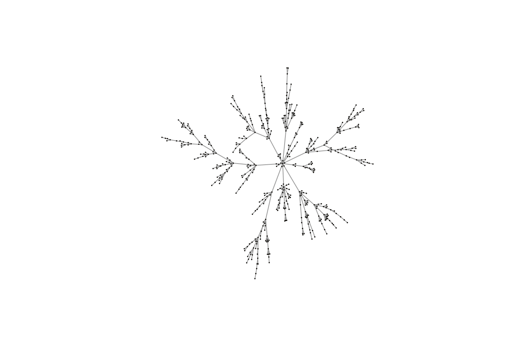
Which is typical for a power-law.
The degree_distribution is insightful here as well
plot(degree_distribution(g_power_law, cumulative = TRUE))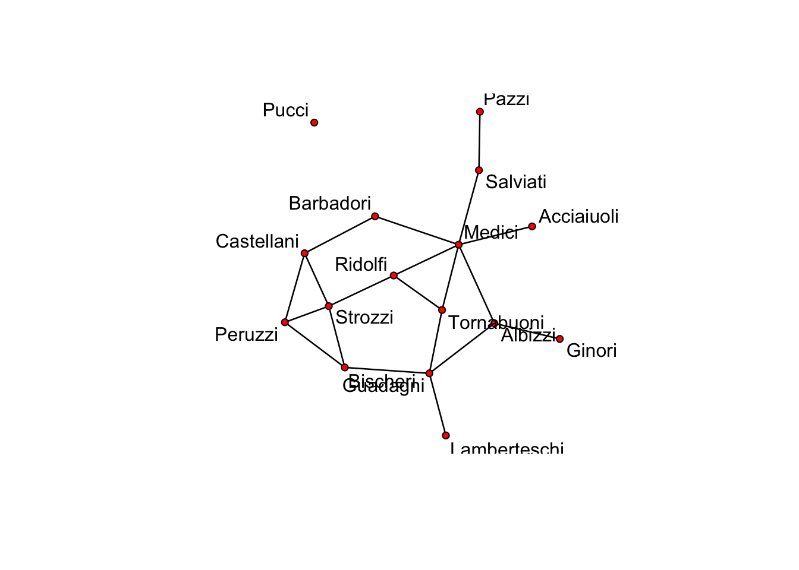
Finally, we may be interested in the shortest path. This can easily be retrieved using distances (with underlying Dijkstra’s algorithm) as follows for the Florence network:
distances(i_florence)## Acciaiuoli Albizzi Barbadori Bischeri Castellani Ginori
## Acciaiuoli 0 2 2 4 3 3
## Albizzi 2 0 2 2 3 1
## Barbadori 2 2 0 3 1 3
## Bischeri 4 2 3 0 2 3
## Castellani 3 3 1 2 0 4
## Ginori 3 1 3 3 4 0
## Guadagni 3 1 3 1 3 2
## Lamberteschi 4 2 4 2 4 3
## Medici 1 1 1 3 2 2
## Pazzi 3 3 3 5 4 4
## Peruzzi 4 3 2 1 1 4
## Pucci Inf Inf Inf Inf Inf Inf
## Ridolfi 2 2 2 2 2 3
## Salviati 2 2 2 4 3 3
## Strozzi 3 3 2 1 1 4
## Tornabuoni 2 2 2 2 3 3
## Guadagni Lamberteschi Medici Pazzi Peruzzi Pucci Ridolfi
## Acciaiuoli 3 4 1 3 4 Inf 2
## Albizzi 1 2 1 3 3 Inf 2
## Barbadori 3 4 1 3 2 Inf 2
## Bischeri 1 2 3 5 1 Inf 2
## Castellani 3 4 2 4 1 Inf 2
## Ginori 2 3 2 4 4 Inf 3
## Guadagni 0 1 2 4 2 Inf 2
## Lamberteschi 1 0 3 5 3 Inf 3
## Medici 2 3 0 2 3 Inf 1
## Pazzi 4 5 2 0 5 Inf 3
## Peruzzi 2 3 3 5 0 Inf 2
## Pucci Inf Inf Inf Inf Inf 0 Inf
## Ridolfi 2 3 1 3 2 Inf 0
## Salviati 3 4 1 1 4 Inf 2
## Strozzi 2 3 2 4 1 Inf 1
## Tornabuoni 1 2 1 3 3 Inf 1
## Salviati Strozzi Tornabuoni
## Acciaiuoli 2 3 2
## Albizzi 2 3 2
## Barbadori 2 2 2
## Bischeri 4 1 2
## Castellani 3 1 3
## Ginori 3 4 3
## Guadagni 3 2 1
## Lamberteschi 4 3 2
## Medici 1 2 1
## Pazzi 1 4 3
## Peruzzi 4 1 3
## Pucci Inf Inf Inf
## Ridolfi 2 1 1
## Salviati 0 3 2
## Strozzi 3 0 2
## Tornabuoni 2 2 0Note that the Pucci family is not in the network and therefore the distances are set to infinity.